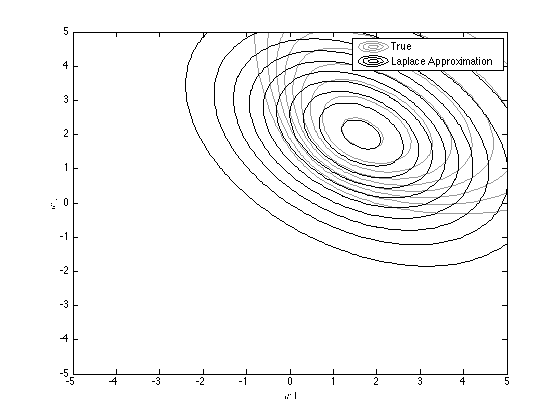
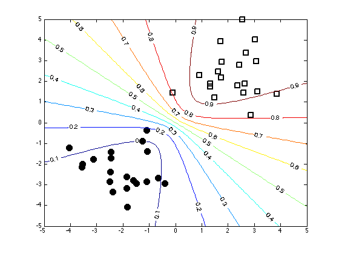

Contents
loglap.m
From A First Course in Machine Learning, Chapter 4. Simon Rogers, 01/11/11 [simon.rogers@glasgow.ac.uk] The Laplace approximation for logistic regression
clear all;close all;
Load the classification data
load ../data/logregdata
Find the mode and the Hessian (see logmap.m)
w = repmat(0,2,1); % Start at zero tol = 1e-6; % Stopping tolerance Nits = 100; w_all = zeros(Nits,2); % Store evolution of w values ss = 10; % Prior variance on the parameters of w change = inf; it = 0; while change>tol | it<=100 prob_t = 1./(1+exp(-X*w)); % Gradient grad = -(1/ss)*w' + sum(X.*(repmat(t,1,length(w))-repmat(prob_t,1,length(w))),1); % Hessian H = -X'*diag(prob_t.*(1-prob_t))*X; H = H - (1/ss)*eye(length(w)); % Update w w = w - inv(H)*grad'; it = it + 1; w_all(it,:) = w'; if it>1 change = sum((w_all(it,:) - w_all(it-1,:)).^2); end end w_all(it+1:end,:) = [];
Set the Laplace approximation
muw = w; siw = inv(-H);
Plot the true posterior (note that we can only get this in unnormalised form)
[w1,w2] = meshgrid(-5:0.1:5,-5:0.1:5); logprior = -0.5*log(2*pi) - 0.5*log(ss) - (1/(2*ss))*w1.^2; logprior = logprior + (-0.5*log(2*pi) - 0.5*log(ss) - (1/(2*ss))*w2.^2); prob_t = 1./(1+exp(-[w1(:) w2(:)]*X')); loglike = sum(log(prob_t).*repmat(t',prod(size(w1)),1),2); loglike = loglike + sum(log(1-prob_t).*repmat(1-t',prod(size(w1)),1),2); logpost = logprior + reshape(loglike,size(w1)); contour(w1,w2,exp(logpost),'k','color',[0.6 0.6 0.6]) xlabel('$w1$','interpreter','latex'); ylabel('$w2$','interpreter','latex');

Overlay the approximation
temp = [w1(:)-muw(1) w2(:)-muw(2)]; D = 2; % Working in 2 dimensions logconst = -(D/2)*log(2*pi) - 0.5*log(det(siw)); log_truepost = logconst - diag(0.5*temp*inv(siw)*temp'); hold on contour(w1,w2,reshape(exp(log_truepost),size(w1)),'k'); legend('True','Laplace Approximation');
Plot the decision contours
% Create an x grid [Xv,Yv] = meshgrid(-5:0.1:5,-5:0.1:5); % Generate samples from the approximate posterior path(path,'../utilities'); Nsamps = 1000; w_samps = gausssamp(muw,siw,Nsamps); % Compute the probabilities over the grid by averaging over the samples Probs = zeros(size(Xv)); for i = 1:Nsamps Probs = Probs + 1./(1 + exp(-(w_samps(i,1)*Xv + w_samps(i,2)*Yv))); end Probs = Probs./Nsamps; figure(1);hold off plot(X(1:20,1),X(1:20,2),'ko','markersize',10,'markerfacecolor','k') hold on plot(X(21:40,1),X(21:40,2),'ks','markersize',10,'linewidth',2) [cs,h] = contour(Xv,Yv,Probs); clabel(cs,h);